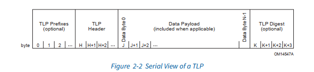
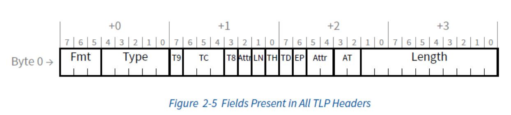
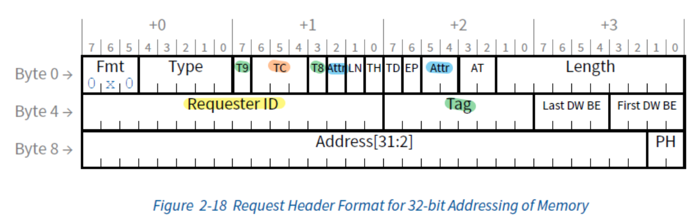
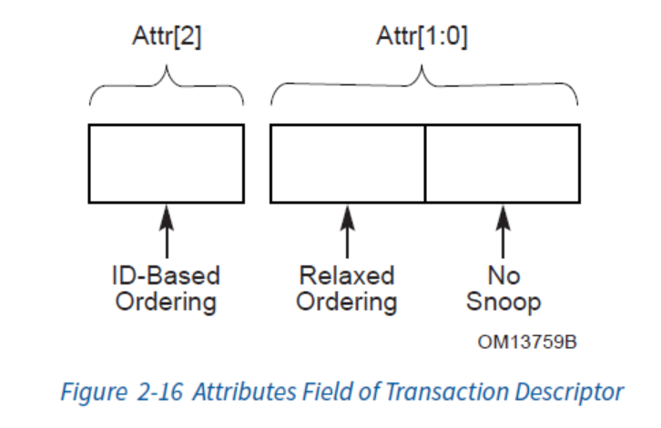
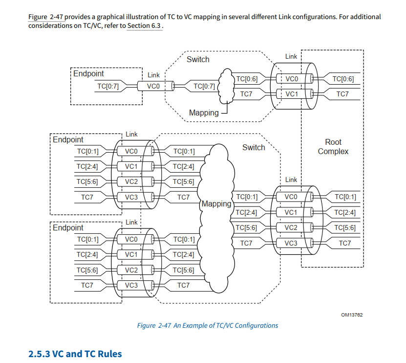
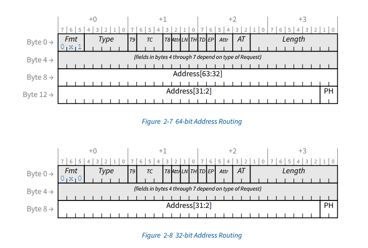

Transaction Layer
[toc]
关键词：事务类型，组包，路由，VC，Ordering
Introduction
PCIe的所有操作都被称为一个事务（Transaction），这些事务分为四种类型：
- 内存事务（Memory Transaction）
- IO事务（IO Transaction）
- 配置事务（Configuration Transaction）
- 消息事务（Message Transaction）
一个事务根据其请求的处理方式又被分为两种：
- Non-Posted：每个事务的请求消息发送出去后，会需要一个完成消息（Completion）来完成事务。比如，读内存。
- Posted：请求发送后不需要完成消息，属于Fire and forget。比如，写内存和所有的消息事务（这也是唯二的两类请求）
所以，事务层的消息有三类：Non-Posted（NP），Posted（P）和Completion（Cpl）。

TLP（Transaction Layer Packet）
PCIe的事务请求和完成消息都是以TLP（Transaction Layer Packet）为单位传输的。

-
TLP Prefix：用来实现一些高级特性，比如精确时间测量（Precision Time Measurement），因为它不是必须的，所以我们先跳过。
SMMU 中用到的substreamID就是这里面的PASID。
-
TLP Digest：4个字节，可以存放诸如CRC的校验码，不过一般不需要开启，因为后面说的数据链路层已经自带了校验了，这里相当于是双保险。
这里有个问题，为什么DLLP层有CRC，这里还需要CRC？因为在switch内部路由时候，需要对DLLP拆包，重新CRC，这个时候TLP有可能发生错误，但是由于switch没有对TLP修改的权限，所以它也不知道TLP出错了，就需要加额外的保护。
-
TLP Header：这个是TLP中最重要的部分，我们后面马上会详细介绍。
-
TLP Payload：这个是TLP中的数据部分，根据不同的事务类型，其大小也不同。比如，读事务就不需要Payload。另外Payload的大小也是有限制的，它不能超过
Max_Payload_Size，最大为4096字节。这个的大小和物理层弹性buffer大小也是有关系的，设计buffer大小需要用到
Max_Payload_Size
TLP头
TLP的头部根据处理地址长度的不同，会有12字节（称为3DW）或者16字节（称为4DW）宽。其前4个字节（第一个DW）是公共的头部，包含了绝大部分的用于描述该事务本身的信息和行为的字段，其后的8个字节（第二个和第三个DW）会根据事务种类的不同而产生变化。其前四个字节如下：

-
Fmt
: TLP头的格式
- Bit 7：如果是1，则Fmt必须是100，表示这个头是TLP Prefix
- Bit 6：1 = 读事务（TLP头之后没有Payload），0 = 写事务（TLP头之后有Payload）
- Bit 5：1 = 使用32位地址，头部长度12字节（3DW Header），0 = 使用64位地址，头部长度16字节（4DW Header）
-
Type：事务类型，表示这个事务是什么类型的事务，比如内存事务、IO事务、配置事务、消息事务等
以上两个共同确定了这个TLP类型。
-
LN（Lightweight Notification）：用于标识当前这个内存请求或者完成消息是不是一个轻量级通知
-
TH（TLP Hints）：用于表示TPH（TLP Processing Hint）是否启用和TPH TLP Prefix是否存在
-
TD（TLP Digest）：1 = 有TLP Digest，0 = 没有TLP Digest
-
EP（Error Poisoning）：1 = 有错误，0 = 没有错误
-
AT（Address Type）：虚拟化，ATS相关的字段，00 = 无地址转换，01 = 需要地址转换，10 = 地址转换已完成，11 = 保留
-
Length：Payload的长度，单位为DW（Double Word），1DW = 4字节
事务描述符（Transaction Descriptor）
为了帮助通信的双方知道对方的信息和对消息的处理方式进行描述，在TLP的头中有几个公共的字段，合在一起被称为事务描述符：事务ID（Requester ID和Tag两个字段），消息的属性（Attr字段），流量分类（TC字段）。虽然TLP头中第二个DW开始的部分会随着请求类型的不同而发生变化，但是这四个字段几乎会在所有的消息中存在（某些情况下Tag会被忽略），所以这里我们用一个内存请求的消息来做例子，展示它们在TLP中的位置：

事务ID（Transaction ID）
事务ID由Requester ID和Tag两个字段组成，用于标识一个事务。其中，
- Requester ID：一共16个bit，用于标识发起这个事务的设备，是请求发起者的BDF，各占用了8:5:3.
- Tag：一共10个bit，每个发出的TLP都会被赋予一个唯一的标签，帮助PCIe进行数据传输的跟踪和管理，比如并行处理，流控或乱序处理。这里注意T8和T9两个bits，它们和其他的tag的bits不在一起（绿色高亮），且需要修改
10-Bit Tag Requester Enable配置寄存器启用
消息属性（Attributes）
消息属性一共有三个bits：高两位 Attr[2:1]（Byte 1 - Bit 2，Byte 2 - Bit 5）用于控制消息处理的顺序，而最低位 Attr[0]（Byte 2 - Bit 4）用于控制Coherency。

消息处理顺序（Ordering）
PCIe协议中有不同的virtual channel，不同TLP包，根据不同的TC，被放到不同的buffer中去。不同VC之间有传输的先后顺序，同一个VC内不同的TC TLP也有不同传输顺序，这部分就需要靠这个ordering来控制。

Attr[2:1]这两个Bits用于控制消息处理的顺序，一共有四种情况：
| Attr[2] | Attr[1] | 顺序类型 | 说明 |
|---|---|---|---|
| 0 | 0 | 强制顺序 | 默认值，不允许乱序处理 |
| 0 | 1 | Relaxed Ordering | 允许接收者在当前请求没有完成的时候，同时处理任何后续的请求 |
| 1 | 0 | ID-based Ordering | 允许接收者在当前请求没有完成的时候，同时处理来自其他设备的请求 |
| 1 | 1 | 无序 | 相当于是Relaxed Ordering和ID-based Ordering的并集，允许接收者在当前请求没有完成的时候，同时处理任何的请求 |
No Snoop
NoSnoop（Attr[0]）使用来控制缓存一致性的。默认的情况下（值为0），PCIe会对请求进行缓存一致性的处理，比如一个内存的读请求，它会保证先去读Cache，如果没有读到再去读主内存。但是如果这个值为1，PCIe就会直接跳过Cache，去操作主内存。这样就有可能导致一致性的问题，因为有可能Cache中的内容还没有被写入主内存中，这样就读到了错误的值。
但是，这并不代表这个flag没有用，如果我们非常确定我们不需要考虑缓存，那么我们可以启用这个flag，直接去操作主内存，从而提高性能。
当然，也正因为有一致性的问题，所以这个功能被很多事务禁止使用了：比如配置事务、IO事务、大部分的消息事务和MSI（跳过缓存发起中断会导致DMA等功能出错，读到脏数据）等。
流量分类（Traffic Class）
Traffic Class总共有3个bit，用于把所有的事务分成8个不同的类别，用于流控。
基于TC的流控是通过和VC（Virtual Channel）合作来实现的：
- PCIe中的所有物理链路（Link）都可以创建多个VC（Virtual Channel），而每个VC都独立工作，并有着流量控制机制。
- 一个或者多个TC可以被映射到一个VC上，这样就可以通过操作TLP的TC来控制TLP走的VC了。
- VC通过信用机制来控制发包速度，每个VC都有着自己的Credit Pool，如果一个VC的Credit不为0，那么它就可以发送TLP，并且消耗特定的Credit。每个VC的Credit也会在特定的时候补充，保证通信不会中断。
- TC的默认值是0，也是所有设备必须实现的。它被Hardcoded到了VC0上，所以如果没有设置TC，那么所有的TLP都会走VC0。
- 最后，如果两个包有了不同的VC，或者不同的TC，那么它们之间将没有顺序的保证。
TLP事务路由
有了事务ID，我们可以很容易的了解当前事务的源是谁，然而为了能让通信双方通信，我们还需要知道事务的目的地是哪里，这样我们才能把事务发送到正确的地方。
在PCIe中，不同类型的事务中会使用不同的字段和方法来指定目的地，有三种：
通过具体的地址来指定目的地：这种路由方式叫做基于地址的路由（Address-Based Routing）。这种方式主要用于内存事务（Memory Transaction）和IO事务（IO Transaction），通过需要访问的地址。

通过BDF来指定目的地：这种路由方式叫做基于ID的路由（ID Based Routing）。这种方式主要用于非内存访问型的事务，比如：配置事务（Configuration Transaction），消息事务（Message Transaction）和事务完成的消息通知（Completion）。
还有一种隐式路由。
Implicit routing is used only with Message Requests, and is covered in Section 2.2.8